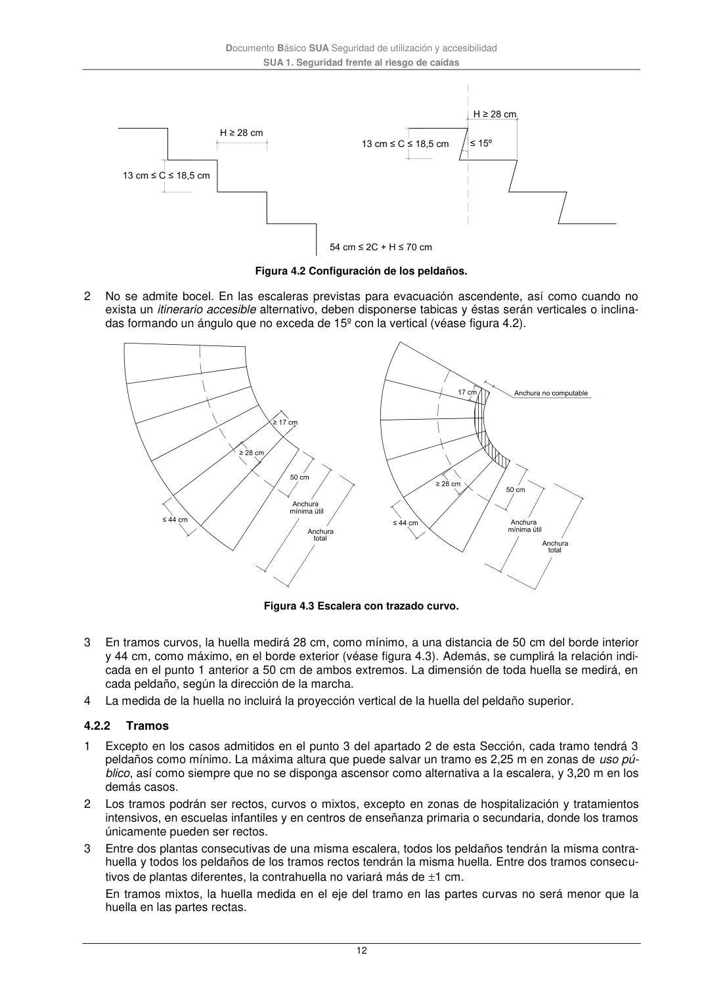

DB-SUA · 4.2.2 Tramos · versión 2022-06-14
SHA256: 3cfb5bbb135e8f02faebd8b844e03e8947994c18d4c9e675a7d2aa37d1cd5958 · página física 12 de 47 · métodos de encabezado
solo si están cotejados.
Formatos: Markdown · JSON de bloques · PDF p. 12 · imagen PNG
Documento Básico SUA Seguridad de utilización y accesibilidad SUA 1. Seguridad frente al riesgo de caídas 12 Figura 4.2 Configuración de los peldaños. 2 No se admite bocel. En las escaleras previstas para evacuación ascendente, así como cuando no exista un itinerario accesible alternativo, deben disponerse tabicas y éstas serán verticales o inclina- das formando un ángulo que no exceda de 15º con la vertical (véase figura 4.2). Figura 4.3 Escalera con trazado curvo. 3 En tramos curvos, la huella medirá 28 cm, como mínimo, a una distancia de 50 cm del borde interior y 44 cm, como máximo, en el borde exterior (véase figura 4.3). Además, se cumplirá la relación indi- cada en el punto 1 anterior a 50 cm de ambos extremos. La dimensión de toda huella se medirá, en cada peldaño, según la dirección de la marcha. 4 La medida de la huella no incluirá la proyección vertical de la huella del peldaño superior. 4.2.2 Tramos 1 Excepto en los casos admitidos en el punto 3 del apartado 2 de esta Sección, cada tramo tendrá 3 peldaños como mínimo. La máxima altura que puede salvar un tramo es 2,25 m en zonas de uso pú- blico, así como siempre que no se disponga ascensor como alternativa a la escalera, y 3,20 m en los demás casos. 2 Los tramos podrán ser rectos, curvos o mixtos, excepto en zonas de hospitalización y tratamientos intensivos, en escuelas infantiles y en centros de enseñanza primaria o secundaria, donde los tramos únicamente pueden ser rectos. 3 Entre dos plantas consecutivas de una misma escalera, todos los peldaños tendrán la misma contra- huella y todos los peldaños de los tramos rectos tendrán la misma huella. Entre dos tramos consecu- tivos de plantas diferentes, la contrahuella no variará más de 1 cm. En tramos mixtos, la huella medida en el eje del tramo en las partes curvas no será menor que la huella en las partes rectas.
